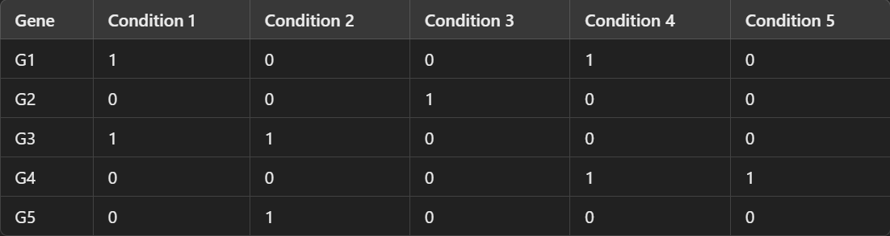

Here's the thing: Real-world data is often riddled with missing or irrelevant values. Take recommendation systems, for example—thousands of users interact with millions of products, but each user engages with only a tiny fraction of them. This results in a sparse matrix/dataset, where most entries are zeros (indicating no interaction). Sparse datasets are everywhere! Whether it’s text data (where documents contain only a few words from a massive vocabulary), user-item recommendation systems, or even bioinformatics (where only specific genes are active in gene expression data), dealing with sparsity is more common than you might expect.
As you might expect there's lots of room to improve efficiency when it comes to sparse datasets. SciPy’s sparse module (scipy.sparse) provides specialized data structures and algorithms for handling sparse matrices—matrices that contain mostly zero values.
Now, before we get into the technical stuff lets look into the areas where we see a lot of sparse matrices
This seems obvious once you read the next line.
Here's why: Among the thousands of available movies, most users will rate only a few.
Let’s consider an example:
Imagine we have a User-Movie Rating Matrix, where rows represent users, columns represent movies, and the values indicate ratings given by users.
Here, you can see that users rate only a few movies. This creates a sparse matrix, where most of the values are zeros, indicating no interaction between users and certain movies.
In bioinformatics, dealing with sparse data is common. For instance, when studying gene expression, not all genes are active in every tissue or condition. This results in a dataset where most values are zeros, indicating no expression.
Take a look at the example above: each row represents a gene, and each column represents a condition. Since only a few genes are expressed in each condition, the matrix is mostly filled with zeros, making it a prime example of sparsity in biological data.
pip install scipyThen you can import the sparse modules
from scipy.sparse import ...Imagine you have a huge dataset with mostly zero values, if you are working with python it will allocate memory for the zeroes as well, now that's a huge waste.
What's worse is that, many operations like matrix multiplication work with all those zeroes as well, when we can just ignore them.
That brings us to the core of this problem: How do I store only the non-zero values and ignore the 0's
Scipy provides four formats based on the kind of operations you want to perform. CSC and CSR are mostly better than COO, since COO is mostly used to build sparse matrices and BSR is only used on a narrow types of datasets. There are many more types of sparse matrices Scipy provides to build sparse matrices.
The Types of formats in which Scipy can store sparse matrices are:
CSR is very efficient for row based operations, such as slicing and matrix multiplication.
Storage Structure:
Delving deeper we see that if:
Array = [0, 0, 3]
[4, 0, 0]
[0, 5, 0]
Then scipy stores the below three info:
(Though Oversimplified it helps to think in this manner)
Values = [3, 4, 5]
Column Indices = [2, 0, 1]
Row Vector = [0, 1, 2, 3]
The way the program accesses data is:
Array[0:1] = [3] # First Row Element
Array[1:2] = [4] # Second Row Element
Array[2:3] = [5] # Third Row Element
Since we already know the column indices, we reconstruct the matrix efficiently.
Similar to CSR but stores data column-wise.
Values: [4, 5, 3]
Row Indices: [1, 2, 0]
Column Pointers: [0, 1, 2, 3]
Stores matrix elements as a list of (row, column, value) tuples.
(row, col): value
(0, 2): 3
(1, 0): 4
(2, 1): 5
BSR stores non-zero values in blocks rather than individual elements. It is useful for structured matrices, such as those in physics and engineering simulations.
Matrix = [1, 2, 0, 0]
[3, 4, 0, 0]
[0, 0, 5, 6]
[0, 0, 7, 8]
Blocks:
[
[[1, 2], [3, 4]], # Block (0,0)
[[5, 6], [7, 8]] # Block (1,1)
]
Block Indices: [0, 1] # Just like Row Indice and Column Pointer
Block Pointers: [0, 1, 2]
COO also helps in constructing sparse matrices.
Stores non-zero elements as a dictionary.
{
(0, 2): 3,
(1, 0): 4,
(2, 1): 5
}
Stores each row as a list of column-value pairs.
[
[ (2, 3) ], # Row 0
[ (0, 4) ], # Row 1
[ (1, 5) ] # Row 2
]
import numpy as np
from scipy.sparse import coo_matrix, csr_matrix, csc_matrix
# Define a simple 5x5 matrix
data = np.array([3, 4, 5])
rows = np.array([0, 1, 3])
cols = np.array([0, 2, 4])
# Create a COO sparse matrix
coo = coo_matrix((data, (rows, cols)), shape=(5, 5))
print("COO format:\n", coo)
# Convert to CSR format
csr = coo.tocsr()
print("\nCSR format:\n", csr)
# Convert to CSC format
csc = coo.tocsc()
print("\nCSC format:\n", csc)
So you can see that we only store the non-zero values and hence increase storage efficiency and decease computation time.
# Create two sparse matrices
sparse_matrix_1 = csr_matrix([[0, 0, 3], [1, 0, 0], [0, 2, 0]])
sparse_matrix_2 = csr_matrix([[0, 1, 0], [2, 0, 0], [0, 0, 4]])
# Perform matrix multiplication
result = sparse_matrix_1.dot(sparse_matrix_2)
print("Result of multiplication:\n", result)
Here instead of wasting resources on zeroes as well we only work with meaningful values.
Sparse datasets are not only common but crucial in many fields like recommendation systems, and bioinformatics. Understanding how to efficiently store, manipulate, and build machine learning models on these datasets can make a huge difference in both performance and accuracy.
And Remember: Less is more when it comes to sparsity!